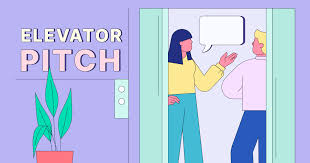
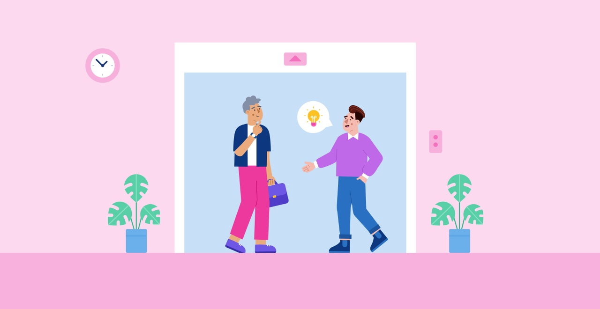
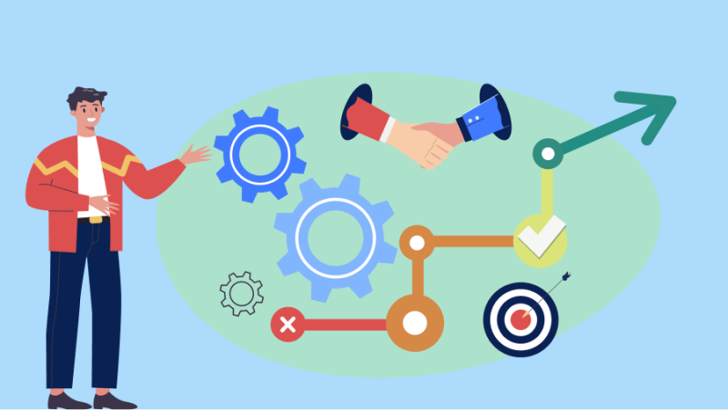

Çfarë është Elevator Pitch?
Elevator Pitch është një përshkrim i shkurtër dhe i qartë i një ideje, një projekti ose një personi, i cili mund të komunikohen në një periudhë të shkurtër kohe – zakonisht në kohën që zgjat një udhëtim me lift (për këtë arsye quhet "Elevator Pitch"). Ky lloj përshkrimi është shumë i rëndësishëm, sepse ndihmon të prezantosh ide apo projekte në një mënyrë të shpejtë dhe efikase.
Origjina e Elevator Pitch
Historia e Elevator Pitch fillon në vitet 1980, kur një profesionist i fushës së marketingut dhe komunikimit, genaqsi kërkonte një mënyrë për të prezantuar një produkt ose një ide në mënyrë të shpejtë dhe të fuqishme. Për të krijuar një përshkrim të tillë, duhej të merrej parasysh që të transmetohej informacioni kyç pa humbur kohë. Kjo ide e thjeshtë u bë mjaft e popullarizuar dhe u përdor nga shumë profesionistë në biznes dhe marketing.
Si të krijoni një Elevator Pitch
Një Elevator Pitch efektiv duhet të përmbajë disa elemente të rëndësishme:
- Prezantimi i vetes: Kush jeni ju dhe çfarë bëni?
- Problemi ose mundësia: Cili është problemi që po zgjidhni ose mundësia që po ofroni?
- Solutioni: Si do ta zgjidhni atë problem ose do të shfrytëzoni mundësinë?
- Ftesë për veprim: Çfarë dëshironi që tjetri të bëjë pas dëgjimit të pitch-it tuaj? (p.sh., një takim, një telefonatë, etj.)
Përfundim
Elevator Pitch është një mjet i fuqishëm komunikimi që mund të përdoret në shumë situata, duke përfshirë takime biznesi, intervista pune, dhe mundësitë për të prezantuar ide në një mënyrë efikase. Kjo teknikë mund të bëjë diferencën në arritjen e suksesit në një botë ku koha është shumë e vlefshme.